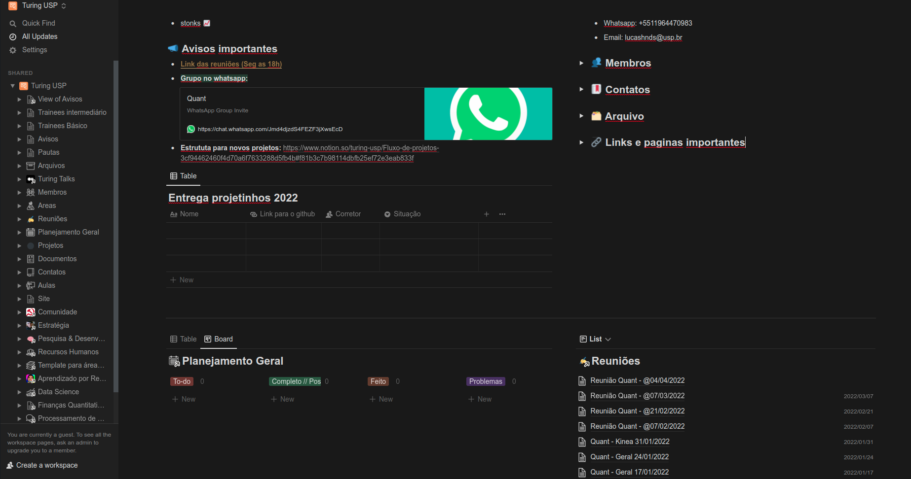

Estudo guiado de finanças quantitativas
Contents
Estudo guiado de finanças quantitativas¶
Bem vindo ao projetinho do Turing Quant!
Neste notebook você aprenderá os seguinte assuntos:
Importação e visualização de dados financeiros
Retornos e Risco (Volatilidade)
Análise de portfólios
Predição de Series Temporais
Alem do código você tambem precisa escrever um Turing Talks sobre algum tema relacionado a finanças, que deve virar uma aulinha interna para area de Quant! Mais adiante damos algumas sujestões de temas. E alias, o Turing Talks pode ser individual, dupla, trio, etc. Entao é bem tranquilo.
Instalação¶
Crie um ambiente virtual
$ virtualenv .quantenv
Instale os requirements
wget https://gist.githubusercontent.com/lhndsp/470a2998d44f433aa71f002315c8e42f/raw/e2a519a46e71c462ac05b5c2678d51b74938e2a1/requirements.txt
$ pip install -r requirements.txt
Adicione o ambiente virtual a sua base de kernels do jupyter notebook
$ python -m ipykernel install --user --name=.quantenv
Após executar esse comando espera-se um resultado como o seguinte:
Installed kernelspec .quantenv in /home/<user>/.local/share/jupyter/kernels/.quantenv
Ative o ambiente virtual
$ source .quantenv/bin/activate
Inicie o Jupyter Notebook
$ jupyter notebook
Obs: Não esqueça de alterar o kernel para .quantenv
Entrega¶
Aconselhamos que você faça tanto as atividades quanto o turing talks em jupyter notebooks (Não precisa converter pra o TT para pdf). Crie um repo no seu github (temos uma aulinha com o basico de git) Na pagina inicial de Quant no Notion tem um espaço para entregar os projetos, é só colocar seu nome e link para o repo github nos espaços indicados. Caso o TT tenha sido feito em grupo, podem subir para um unico repo (ou para o de todos se quiserem), só deixar no inicio do texto que são os autores.

E uma observação importante, caso você instale algum pacote que nao esteja lista no requirements.txt na primira linha do notebook colocar !pip install <pacote>. Por exemplo, caso queira usar o rich para o print, so criar uma celula antes de importar a lib e colocar !pip install rich.
Logo algum dos membros de Quant vai corrigir seu projeto e mandar um feedback. Lembrando que não temos reprovação, o intuito do projeto é você poder aprender mais sobre os conceitos da area, entao não precisa ficar mal se não conseguir fazer alguma parte, é sobre isso e ta tudo bem <3! Vamos fazer um aulinha de correção depois pra garantir que todos entenderam. E pode ficar a vontade pra pedir ajuda pra qualquer um dos membros!!!